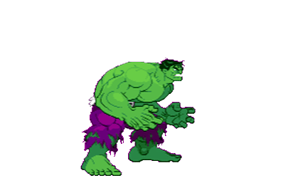

O ser é caçado pelo exército e,
mesmo quando enfrenta ameaças inimigas, tem suas ações mal-compreendidas e é considerado perigoso
pelo governo norte-americano. Entre as inúmeras aventuras que viveu, foi um dos fundadores dos
Vingadores, mas deixou a equipe pouco após a sua formação. Ao longo de sua história, a criatura
alternou períodos de inteligência com períodos em que não tinha controle sobre suas ações. Atualmente,
o Hulk age como um agente especial da SHIELD, a organização de defesa norte-americana.
